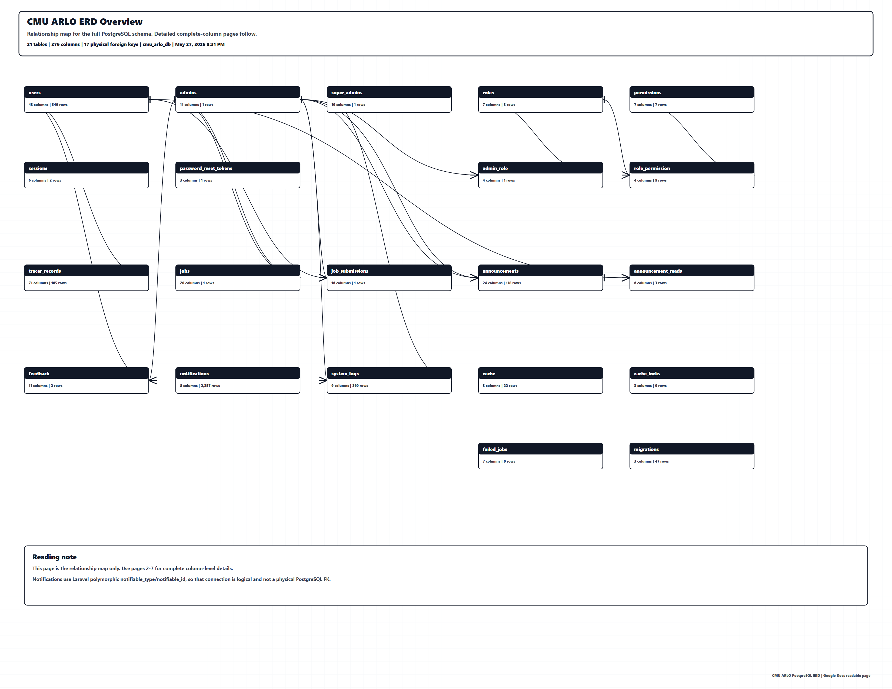
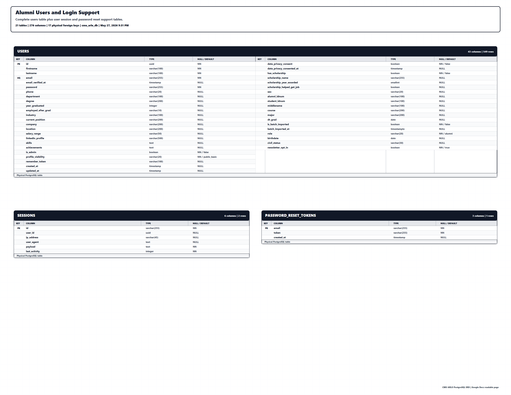
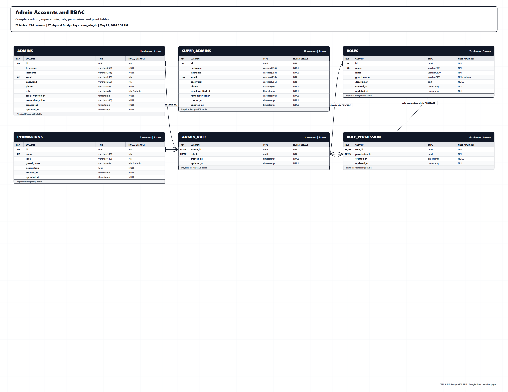
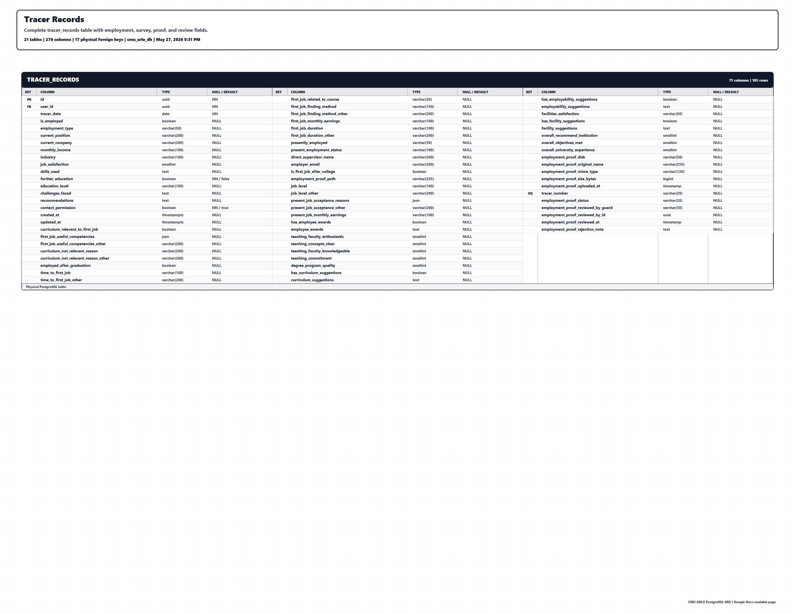
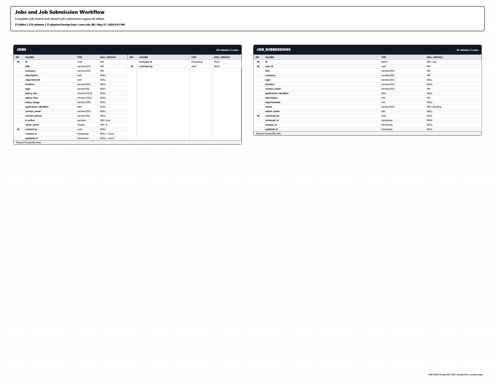
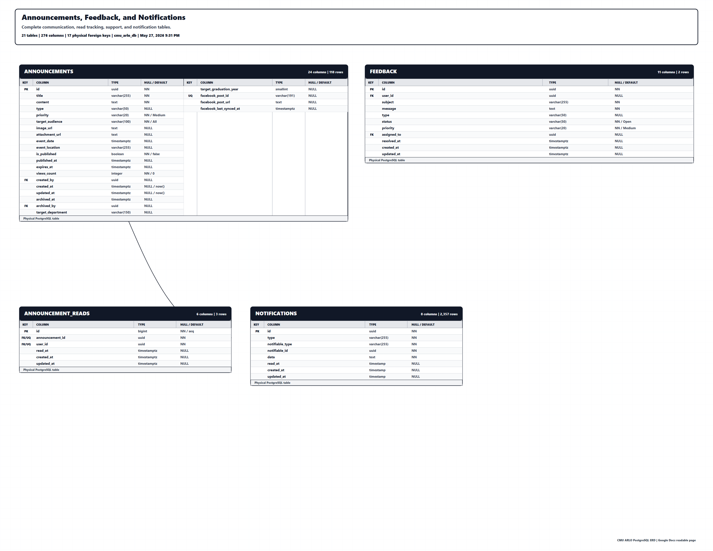
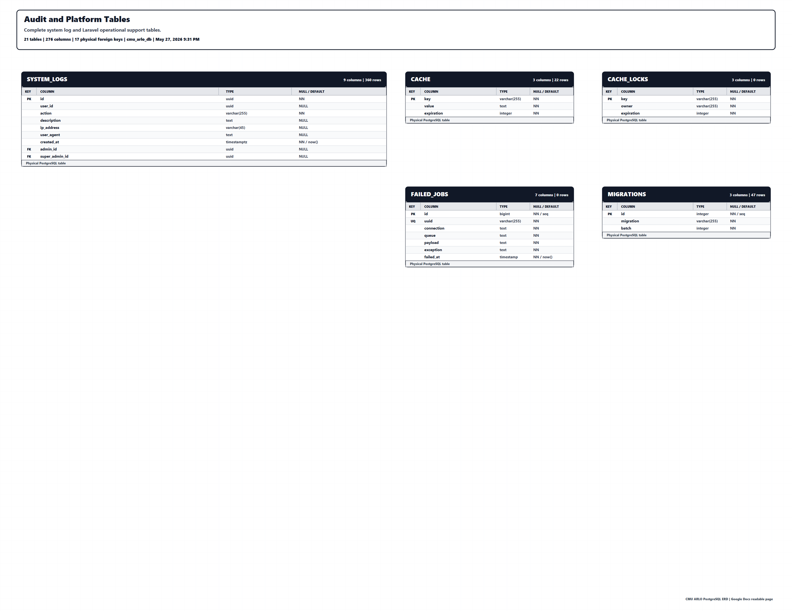

CMU ARLO ERD Overview

Alumni Users and Login Support

Admin Accounts and RBAC

Tracer Records

Jobs and Job Submission Workflow

Announcements, Feedback, and Notifications

Audit and Platform Tables
